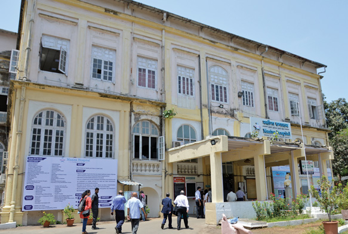
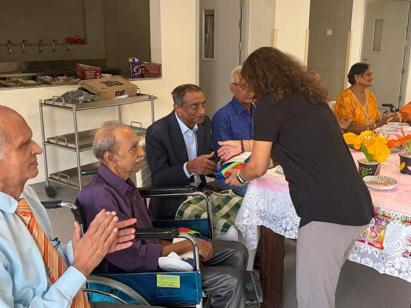
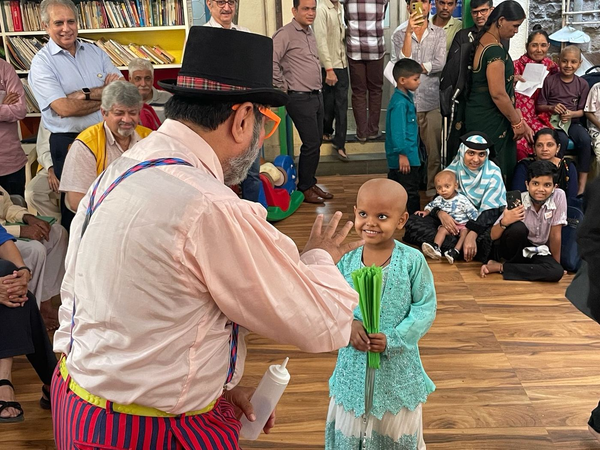
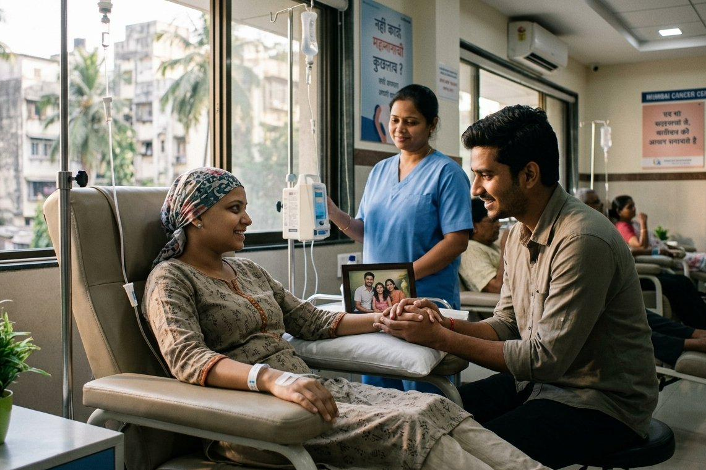
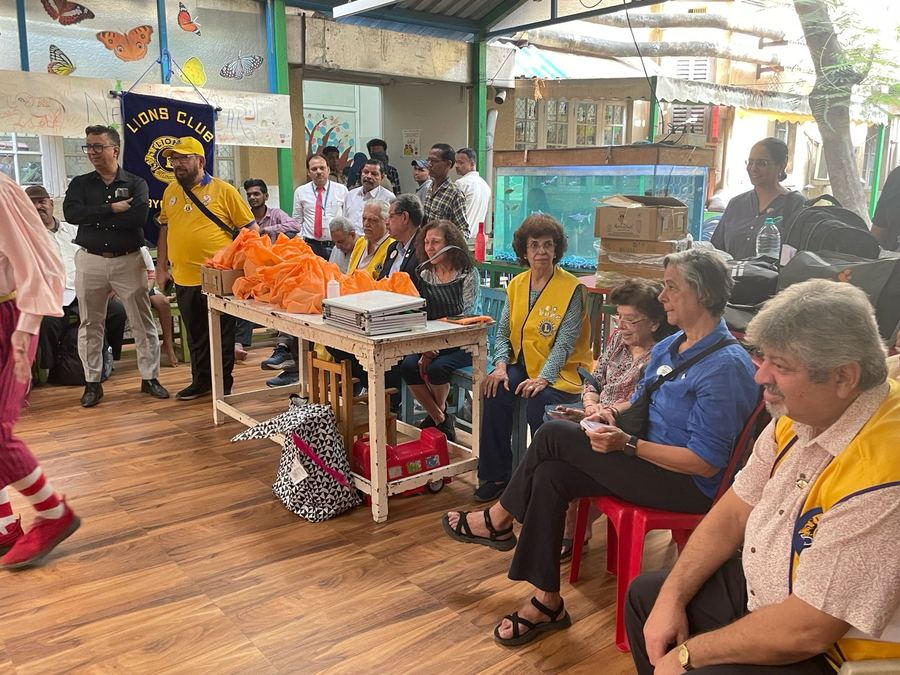
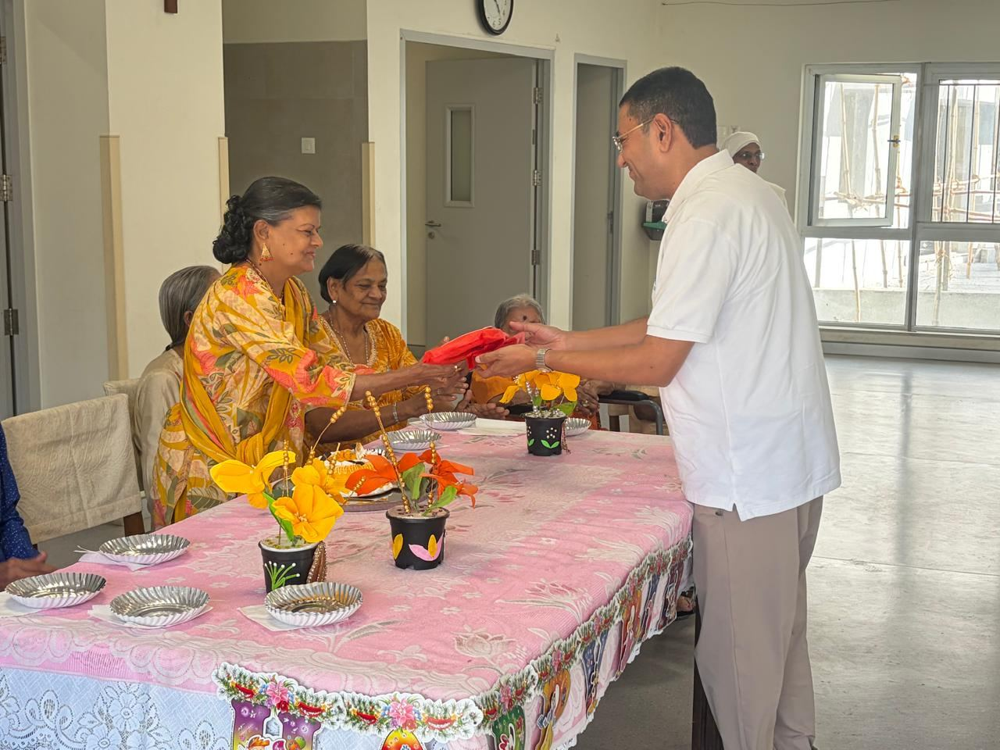
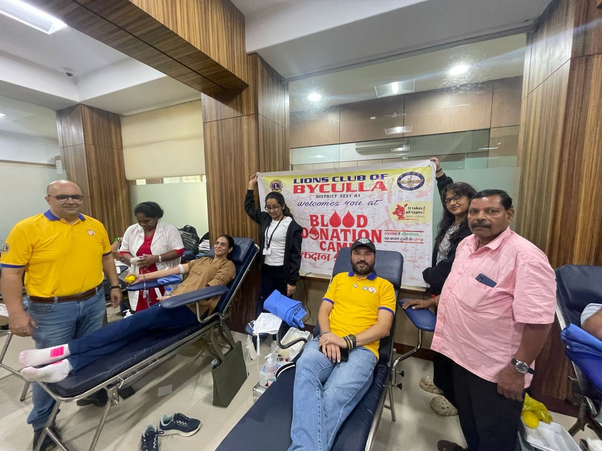

Masina Hospital
Diabetes awareness & check-up camp
Free screening for underserved communities. Early detection saves lives, not just treats illness.
Since 1977, every rupee we raise goes directly into the field hospitals, classrooms, blood banks, and shelters. This is a window into the lives we have touched, and the work that never stops.
Every project photographed, verified, and filed with Lions International. Not charity from a distance presence on the ground.

Masina Hospital
Diabetes awareness & check-up camp
Free screening for underserved communities. Early detection saves lives, not just treats illness.

H.C. Jehangir Health Clinic, Gamadia Colony
6 wheelchairs Rs 1,30,000
Mobility returned to six individuals who had lost the ability to move freely.

Bai Jerbai Wadia Children's Hospital, Cancer Ward
Clown & magic show
Joy is medicine too. We brought laughter to children enduring their hardest days.

SRCC Children's Hospital, Haji Ali
3 chemoports for chemotherapy Rs 60,000
Life-saving access to treatment for children whose families could not afford it.

Avanbai Petit Girls High School, Bandra
School bags & wrist watches
Small gifts, large signals every child deserves to walk into school feeling ready.

Vidya Integrated, Powai
Scholarships
Education funded for children whose potential far outpaces their resources.

BYL Nair Hospital, Ophthalmic Department
Ophthalmoscope & probes Rs 4,97,000
Precision instruments for a department that serves patients who have nowhere else to turn.

Sir J.J. Dharamshalla, Nagpada
Milk & food grains
A simple meal, delivered with dignity. No one in our city should go to sleep hungry.

Asha Sadan, Dongri
Lunch & washing machine
Sustenance and sanitation two things every shelter home deserves without having to ask.

Parekh Dharamshalla for Senior Citizens, Vasai
Musical entertainment & snacks Rs 15,000
Some afternoons, what a person needs most is not medicine it is music. We brought both.

N.M. Petit Widow's Chawl, Fort
Gift hampers to 14 widows Rs 31,000
Fourteen widows. Fourteen hampers. The weight of being remembered, in a box.
Lady Hirabai Cawasji Jehangir Health Unit, Tardeo
TV, fans & water cooler
Comfort items that transform a clinical space into a dignified one.
Tata Memorial Hospital
Negative suction device Rs 4,00,000
Critical post-operative equipment donated to one of India's foremost cancer hospitals.
Dadar Athornan Madrassa
6 computers
Digital access is no longer a luxury. We helped bridge the gap for students who deserve to compete on equal ground.
RNC Free Eye Hospital, Valsad
Slit lamp
Equipment that will serve thousands of patients for years to come. One donation. Lasting sight.
J.J. Dharamshalla for Seniors, Nagpada
Acer laptop Rs 35,000
Staying connected to the world should not stop at a certain age. A laptop gifted; a window reopened.
Animal Rescue Centre, Thane
Maintenance support Rs 50,000
India has 60 million stray animals. We believe every one deserves a safe place.
St Jude India Child Care, Cotton Green
Provisions & hampers for 170 children Rs 75,000
Meals and essentials delivered to children undergoing cancer treatment and their families.
Anjuman-e-Islam Girls School
Educational aid for children of cancer patients Rs 1,00,000
Keeping a classroom seat open for children whose parents are fighting cancer.
Xavier Resource Center for Visually Challenged
Donation of assistive resources
Tools that help visually challenged students study and compete on equal footing.
B.Y.L. Nair Hospital, Ophthalmic Department
Continued Ophthalmic Department upgrade
The same year the club secured its FCRA sanction and was named Best Club in the district.
Earthquake Relief, Bhuj & Anjaar, Gujarat
Grain & essential commodities distribution
Personally led relief convoys to villages left devastated by the Gujarat earthquake.
Happy Home and School for the Blind
Adopted 40 blind children
A full year of care and schooling sponsored for forty children living without sight.
Lok Seva Sangam, Chembur
Physiotherapy equipment donated
Equipment that restored mobility and independence to those in need of rehabilitation.
Masina Hospital
9-bed General Ward with Burns Unit Rs 1,00,000
The first dedicated burns unit of its kind in Maharashtra, built when few institutions had one.
Khushnam Khambatta Mercy Mission, USA
Cancer treatment sponsorship Rs 1,27,000
A mercy mission that sent a Byculla child abroad for life-saving cancer care.